1 语义分割 实例分割
语义分割：为图像中的每个像素标注语义类别标签
实例分割：同时检测并分割，不仅需要区分语义，还要区分不同的目标实例
例如一张图像有两条狗，语义分割只需要区分像素属于狗这个类别，实例分割需要区分像素属于的两条狗中的哪一条。
实例分割任务与传统目标检测的主要区别在于，实例分割预测每个对象的像素级边界，而目标检测只预测目标的大致位置。
2 广泛使用的语义分割模型
2.1 全卷积网络 (FCN)
FCN将通常的卷积神经网络架构最后的全连接层变为卷积层，一个确定大小的全连接层对应的图像大小也得是固定的，而FCN可以输入任意大小的图像，因为它不再依赖固定长度的展平向量；假设要识别的种类是C,全连接层中的一个神经元同时连接了特征图中所有空间位置、所有通道的特征，最后输出的大小也是C，一张图片输出每个类别对应的概率大小，FCN的输出是H × W × C，也就是说一张图片里的每个像素都会有一个每个类别对应的概率大小，从而保留空间布局信息。
FCN先使用一些经典的CNN网络提取特征，由于卷积过程会使特征图变小，所以需要上采样，由于最后一层的特征图太小，仅对最后一层的特征图进行上采样得到原图大小的分割，细节会丢失。因此，通过跳级结构将低层（精细层）与高层（粗糙层）结合，使得模型兼顾局部预测以及全局结构。
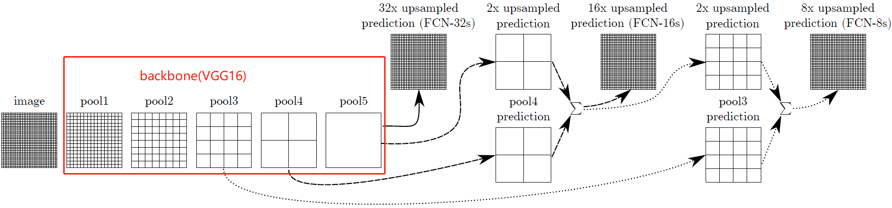
2.2 U-Net
U-Net是一个典型的编码器—解码器网络，使用跳跃连接，信息可以从编码器直接传递到解码器，这样模型就可以保留图象在压缩过程中的重要细节。
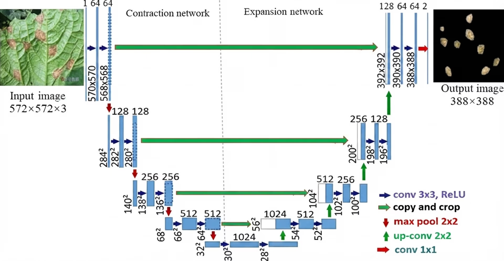
左半部分为编码器，图像经过卷积和池化，尺寸逐步缩小，更高级的语义特征被提取出来。
输入图像为572 × 572 × 3
- 第一次卷积和池化：卷积核Kernel大小为3 × 3 × 64 ，步长Stride=1，填充Padding=0，根据计算公式
连续进行两次卷积，特征图尺寸变为568 × 568 × 64，然后进行2×2最大池化，步长为2，特征图尺寸变为284 × 284 × 64。
-
第二次卷积和池化，卷积核Kernel大小为3 × 3 × 128 ，步长Stride=1，填充Padding=0，连续进行两次卷积，特征图尺寸变为280 × 280 × 128，然后进行2 × 2最大池化，步长为2，特征图尺寸变为140 × 140 × 128。
-
第三次卷积和池化，卷积核Kernel大小为3 × 3 × 256 ，步长Stride=1，填充Padding=0，连续进行两次卷积，特征图尺寸变为136 × 136 × 256，然后进行2 × 2最大池化，步长为2，特征图尺寸变为68 × 68 × 256。
-
第四次卷积和池化，卷积核Kernel大小为3 × 3 × 512 ，步长Stride=1，填充Padding=0，连续进行两次卷积，特征图尺寸变为64 × 64 × 512，然后进行2 × 2最大池化，步长为2，特征图尺寸变为32 × 32 × 512。
-
第五次卷积，卷积核Kernel大小为3 × 3 × 1024 ，步长Stride=1，填充Padding=0，连续进行两次卷积，特征图尺寸变为28 × 28 × 1024，网络将图像压缩成了空间分辨率较低、通道数量较多的高级特征表示。
右半部分是解码器，特征图尺寸逐步变大，并且融合收缩路径保留的细节信息。
跳跃连接将左侧对应层复制裁剪与右侧特征拼接。
-
第一次上采样，28 × 28 × 1024通过2 × 2转置卷积变为56 × 56 × 512，与左侧64 × 64 × 512 拼接得到 56 × 56 × 1024 ，连续进行两次3 × 3 × 512卷积后得到52 × 52 × 512
-
第二次上采样，52 × 52 × 512通过2 × 2转置卷积变为104 × 104 × 256，与左侧136 × 136 × 256拼接得到 104 × 104 × 512，连续进行两次3 × 3 × 256卷积后得到100 × 100 × 256
-
第三次上采样，100 × 100 × 256通过2 × 2转置卷积变为200 × 200 × 128，与左侧280 × 280 × 256拼接得到 200 × 200 × 256，连续进行两次3 × 3 × 128卷积后得到196 × 196 × 128
-
第四次上采样，196 × 196 × 128通过2 × 2转置卷积变为392 × 392 × 64，与左侧568 × 568 × 64拼接得到 392 × 392 × 128，连续进行两次3 × 3 × 64卷积后得到388 × 388 × 64
-
最后388×388×64经过卷积核大小为1×1×2，步长为1，填充为1的卷积，尺寸变为388×388×2，最后一个卷积通道数为2是因为这张图进行的是一个二分类任务，对每个像素输出两个类别的得分。
2.3 SegNet
也是一个编码器-解码器网络，与U-net的区别在于SegNet主要利用最大池化的索引恢复空间分辨率，而 U-Net 通过跳跃连接，将编码器的特征图与解码器的特征图进行拼接。
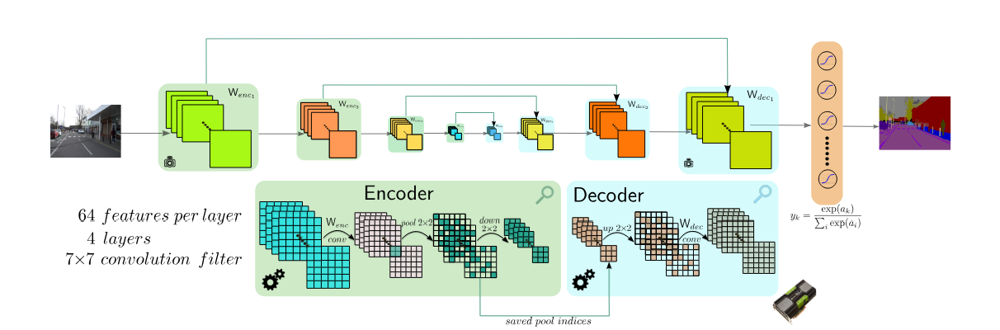
编码器网络对应VGG16的前13个卷积层，划分为五组，每组包括Conv卷积、BN归一化、 ReLU激活函数、2 × 2的MaxPooling。在最大池化时SegNet会存储最大池化的索引，也就是保存编码器特征图中最大特征值的位置，这样在进行上采样放大特征图时，除最大值对应的位置其他位置都设置为0，这样可以更好地反应物体的边界。解码器网络也划分为五组，包括上采样、卷积，最后一组经过一个Softmax层输出每个像素的类别。
2.4 DeepLab
2.4.1 DeepLab V1
核心是VGG16改造版提取图像特征，再通过空洞卷积尽量保留空间分辨率，再使用全连接条件随机场西化分割边界。
VGG16的卷积和池化会不断缩小特征图，难以精确判断物体边界，DeepLab V1使用了空洞卷积来扩大感受野。空洞卷积和普通卷积的区别是空洞卷积的采样点之间存在间隔，用膨胀率（dilation rate）控制间隔大小，对于3×3 卷积核，有效感受野尺寸为k+(k-1)(r-1)，若r=2，则有效感受野尺寸为5×5。
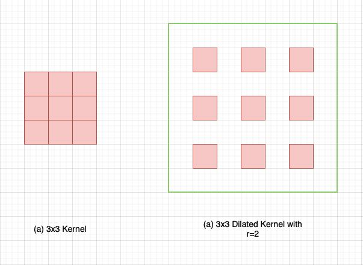
经过空洞卷积后，对每个像素进行类别预测，然后经过双线性插值上采样将特征图恢复到原图尺寸，最后经过条件随机场CRF（Conditional Random Field）使最后分类结果的边缘更加精细。
2.4.2 DeepLab V2
DeepLab V2 最重要的改进是引入 ASPP（Atrous Spatial Pyramid Pooling，空洞空间金字塔池化），通过多个不同膨胀率的空洞卷积分支，同时提取不同尺度的特征。它要解决的问题是：同一张图像中，目标可能有大有小，单一感受野不容易同时处理好不同尺度的目标。
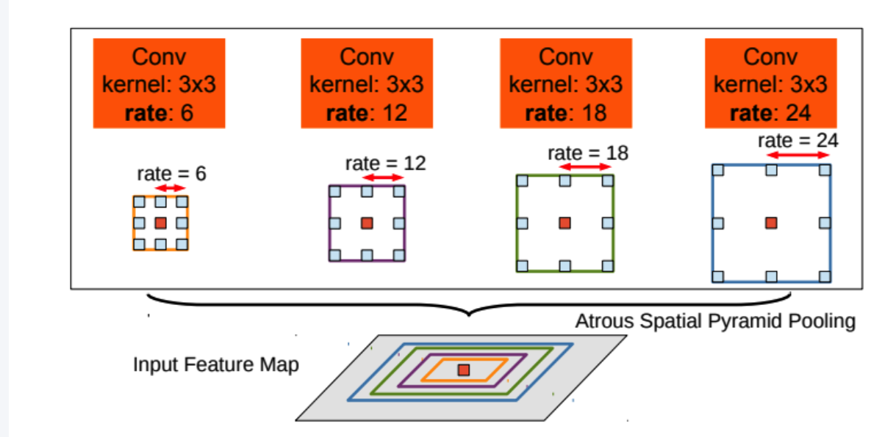
DeepLab V2 可以搭配不同的主干网络，常见的是 ResNet-101，也存在基于 VGG-16 的版本。经过主干网络后的特征图同时经过多个使用不同膨胀率的空洞卷积分支，因为小膨胀率关注相对局部的细节;中等膨胀率关注更大范围的物体结构;大膨胀率关注更广泛的上下文信息，各分支进行类别预测，融合输出。
经过 ASPP 后，网络会得到类别分数图，再通过双线性插值将预测结果恢复到原图的空间尺寸，最后也是全连接 CRF。
2.4.3 DeepLab V3
DeepLab V2 使用 ASPP 提取多尺度特征；DeepLab V3 则进一步改进 ASPP，并引入图像级特征来增强全局上下文信息，同时通过改进的空洞卷积策略控制特征图分辨率。
在前四个分支提取不同尺度的特征后，v3加了全局平均池化（特征图尺寸变为1×1×C）、1×1卷积（对通道数进行变换），上采样（把特征图恢复到与其他分支融合的空间尺寸），这样模型可以提取图像级特征，有助于消除局部判断的歧义。五个分支沿通道维度拼接后再进行1×1卷积，对多分支信息进行融合和通道压缩，形成用于像素分类的综合特征。
除了 ASPP，DeepLab V3 还重点研究了空洞卷积的级联方式，以及如何设置不同层的膨胀率。它使用 Batch Normalization 等设计帮助训练，并通过合理控制输出步长来平衡空间分辨率与计算量。也不再把全连接 CRF 作为必要的后处理步骤。
2.4.4 DeepLab V3+
在 DeepLab V3 的基础上，增加了一个解码器（Decoder），负责恢复空间细节，让分割边界更加精确。在ASPP后，v3通过上采样直接恢复分辨率，得到每个像素分类结果，v3+对ASPP的输出进行上采样再与主干网络的浅层特征融合，经过卷积细化后再进行上采样最后得到结果。浅层特征空间分辨率通常较高，保留了较多的位置和细节信息，帮助分割模型确定物体的边界、细小结构。深层特征感受野通常更大，空间分辨率通常更低，但语义表达更强，帮助模型判断某个区域属于人、道路、建筑还是其他类别。
2.5 PSPNet
经过主干网络Backbone后是金字塔池化模块PPM，有四个池化分支，1×1池化尺度是全局信息、2×2池化尺度是粗粒度区域信息、3×3池化尺度是中等尺度信息、6×6池化尺度是较细粒度的区域信息，经过池化后是1×1卷积降低通道数、上采样、然后与原始特征图拼接Concat，然后卷积预测每个像素类别。
3 实例分割基础概念
3.1 实例（Instance）与类别（Class）
- 类别（Class）： 目标属于什么类型。
- 实例（Instance）： 图片中的某一个具体目标；实例 ID： 用来区分不同目标的编号，通常是标注或内部处理时使用的标识。
3.2 边界框（Bounding Box）、数据集标注
目标检测那篇提到过 目标检测入门
3.3 掩码（Mask）
- 最容易理解的是二值掩码（Binary Mask）：
- 1：属于目标的像素。
- 0：不属于目标的像素。
3.4 类别概率与置信度（Confidence Score）
置信度通常用于表示模型对某个预测结果的确信程度，但具体定义取决于模型的输出设计。它不一定等于真实世界中预测正确的概率。
3.5 交并比（IoU）
用于衡量预测区域与真实标注区域的重叠程度
- (A)：模型预测的区域
- (B)：人工标注的真实区域
- (A\cap B)：两者重叠的区域
- (A\cup B)：两者合并后的区域
IoU 较高,预测区域与真实区域更接近，通常意味着定位或分割质量更好。 - Box IoU： 比较预测框和真实框。
- Mask IoU： 比较预测掩码和真实掩码。
3.6 非极大值抑制（NMS）
Non-Maximum Suppression是一种用于去除重复检测结果的后处理方法。例如，模型检测同一辆汽车时，可能同时预测出三个高度重叠的边界框。如果全部保留，就会把一辆车当成三个目标。
NMS 的基本过程是：
- 根据置信度对预测框排序。
- 选择置信度最高的预测框。
- 计算它与其他预测框的 IoU。
- 对同类别中与它重叠过大的预测框进行抑制。
- 继续处理剩余预测框，直到完成筛选。
3.7 评价指标
| 指标 | 含义 |
|---|---|
| AP | Average Precision，平均精度，通常针对某一类别和指定评价条件计算 |
| AP50 | 在 IoU 阈值为 0.50 时计算 AP |
| AP75 | 在 IoU 阈值为 0.75 时计算 AP |
| Mask AP | 基于实例掩码匹配计算的 AP |
| Box AP | 基于边界框匹配计算的 AP |
| mAP | 对多个类别的 AP 求平均；具体定义取决于采用的评价协议 |
4 模型
4.1 Faster R-CNN
4.1.1
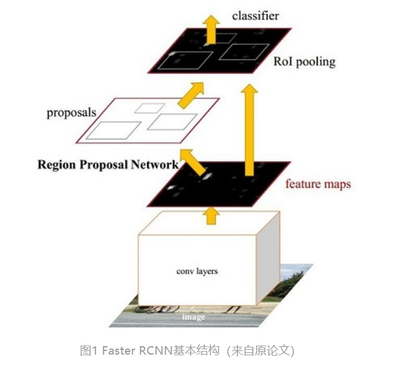
是一个两阶段的框架
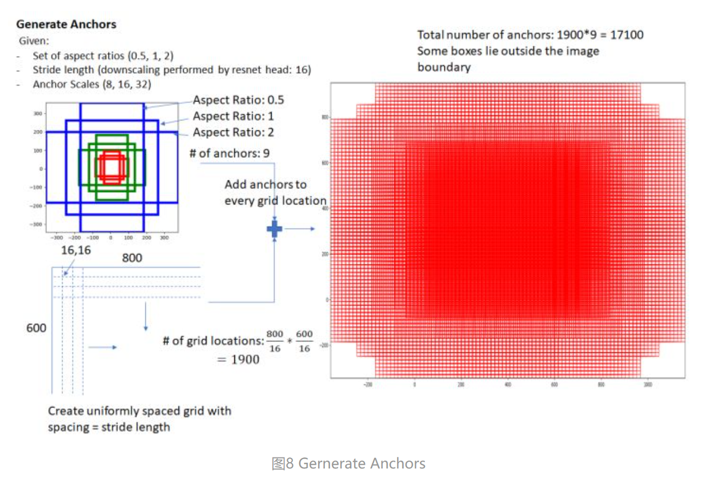
- 锚框anchor
- 在特征图（如 VGG16 的 conv5，相对原图 stride = 16）的每个空间位置，以该点映射回原图的中心为基准，预设 k = 9 个 anchor：三种尺寸(scale)和三种比例(ratio)三种尺寸分别是小（128）中（256）大（512），三个比例分别是1:1，1:2，2:1。3×3的组合总共有9种
- 对于一个H×W的图，锚框个数为H/16 × W/16 ×9
4.1.2 模型架构
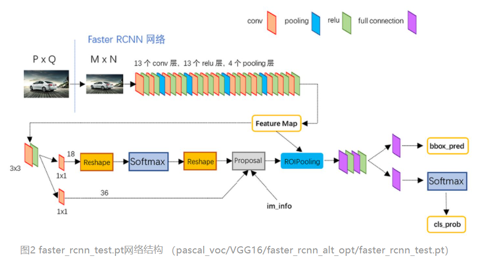
4.1.2.1 Backbone
- conv layers进行特征提取，卷积核大小为3×3，填充为1，步长为1，池化为2×2，步长为2，则经过每一个conv层特征图尺寸不变，经过每一个池化层尺寸缩小到原来的二分之一，那么一个H×W大小的图经过conv layers尺寸变为H/16 × W/16
4.1.2.2 RPN
- 骨干网络得到的特征图经过3×3 conv(pad=1)+ReLU，经过3×3 conv(pad=1)，特征图尺寸不变，但是感受野可以扩大。
- 两条分支：
- cls分支经过1×1×18（锚框anchor个数为9）covn，将特征图通道数变为两倍的锚框数，是因为要区分每个anchor是ositive(前景，包含目标)，还是negative(背景，不包含目标)，然后Softmax分类得到两种类别的score；
- 区分标准：符合下面条件之一的即为positive:与任意GT(Ground Truth 真实标注)区域的IoU大于0.7，与GT区域的IoU最大的anchor(也许不到0.7)
- reg分支经过1×1×36 covn输出 4k = 36 个值，每个 anchor 的 4 个坐标修正量（相对于真实物体框的偏移）
- cls分支经过1×1×18（锚框anchor个数为9）covn，将特征图通道数变为两倍的锚框数，是因为要区分每个anchor是ositive(前景，包含目标)，还是negative(背景，不包含目标)，然后Softmax分类得到两种类别的score；
-
(t_x)：中心点 x 坐标的偏移。
-
(t_y)：中心点 y 坐标的偏移。
-
(t_w)：宽度的缩放修正。
-
(t_h)：高度的缩放修正。
4.1.2.3 Proposal Layer
- 输入包括cls分支的2k个输入和reg分支的4k个输入
- 根据偏移量对锚框进行修正，假设原始Anchor的中心坐标和宽高为
那么经过修正后的边界框为
这样，原始 Anchor 就变成了模型预测的候选框。
- 接着修剪超出图片范围的坐标，过滤过小的候选框
- 非极大值抑制（NMS）将重叠的框去掉：
1.按照候选框的前景概率从高到低排序
2.选择概率最高的候选框
3.计算它与其他候选框的 IoU
4.如果某个候选框与它的 IoU 超过设定阈值，就将该候选框抑制（删除）
5.重复上述过程，直到处理完候选框 - Top-N 筛选择前2000个保留一定数量的候选框作为最终的RoIs。
4.1.2.4 RoI Pooling
- 有2个输入：原始的feature maps、RPN输出的RoIs
- RoIs具有不同的宽度和高度，但后面的全连接层要求输入具有固定维度
- 将候选框映射到特征图，假设我们希望每个 RoI 最终输出7×7，那么 RoI Pooling 就会把每个候选区域（在feature maps上）划分成 7×7 个网格，对每个网格进行 Max Pooling，每个网格最终只保留一个数值，则每个候选区域的特征图大小都变为7×7
4.1.2.5 RoI Head
- 假设 Backbone 输出的通道数为 512，RoI Pooling 输出大小为 7×7。
那么每个 RoI 的特征尺寸为：
首先将其展平：
然后经过两层全连接层：
最终得到一个 4096 维的特征向量，这个特征向量会同时送入两个分支。
- 分类分支（Classification Branch），假设有五个类别，分类分支就需要输出 5 个类别的分数，首先经过全连接层
然后再经过Softmax得到各个类别概率。
- 边界框回归分支（Bounding Box Regression Branch）进一步调整候选框的位置和大小，输出候选框的位置偏移量
再利用这四个参数调整候选框，使其更加贴近要预测物体的真实边界。
4.1.3 损失函数
Faster R-CNN的loss由两部分组成：RPN的loss + RoI Head中的loss构成，而这两部分中，每一个部分的loss又都是由分类loss + 回归loss组成。
4.1.3.1 RPN cls Loss & reg Loss
- cls Loss:cls分支每个Anchor会得到两个类别（前景/背景）的预测分数，经过softmax，使用交叉熵损失（Cross Entropy Loss）
假设
则
预测越接近真实标签，Loss 越小。
一般形式可以写成：
-
(i)：第 (i) 个 Anchor
-
(y_i^*)：Anchor 的真实标签（前景或背景）
-
(P_i(y_i^*))：模型预测的真实类别概率
-
(N_{cls})：分类损失的归一化因子，具体实现可能采用不同的归一化方式
-
reg Loss:
把根据 Ground Truth 计算得到的真实偏移量记作：
使用 Smooth L1 Loss 计算预测偏移量与真实偏移量之间的误差:
因此：
这里的 是一个指示函数：
- Anchor 是正样本，取 1，计算回归损失。
- Anchor 是负样本，取 0，不计算回归损失
4.1.3.2 RoI cls Loss & reg Loss
- cls Loss:RoI cls分支输出C+1个类别的预测概率（C为要识别的目标类别，加上背景）
(u_i)：第 (i) 个 RoI 的真实类别
(P_i(u_i))：预测为真实类别的概率
(N)：参与分类损失计算的 RoI 数量
RoI cls Loss 也是交叉熵损失，但它是多类别分类，而 RPN cls 是二分类。
- reg Loss:RoI reg对每个Proposal（经过 Proposal Layer 处理后的 Anchor）预测4C个偏移量
(u_i)：RoI 的真实类别
(u_i>0)：表示该 RoI 是前景正样本
(t_{ij}^{u_i})：取出真实类别对应的四个预测偏移量
(t_{ij}^*)：真实边界框偏移量
4.2 Mask R-CNN
扩展自Faster R-CNN，也是一个两阶段的框架，第一个阶段扫描图像并生成提议(proposals，即有可能包含一个目标的区域)，第二阶段分类提议并生成边界框和掩码。
4.2.1 模型结构
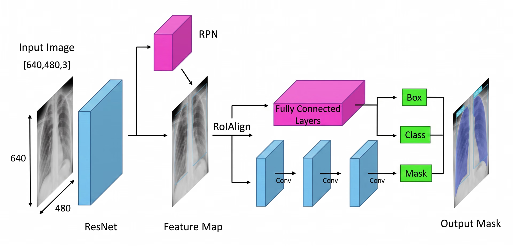
（来源：researchgate.net）
4.2.1.1 Backbone
- 主干网络（通常是 ResNet-50 或 ResNet-101）进行特征提取，接着FPN（Feature Pyramid Network）用于融合不同尺度的特征，让模型更好地处理大目标和小目标。
4.2.1.2 RPN
- 图像完成关键特征处理后，RPN检查图像，并提出可能包含物体的区域（Region Proposal），生成多个可能的物体位置，即锚框，随后，网络会评估这些锚框，并选出最有希望的锚框进行进一步分析。
4.2.1.3 RoI Align
- 确定关键区域后，RoI Align（感兴趣区域对齐）使用双线性插值，它和旧方法 RoI Pooling 的区别是：RoI Pooling 会对区域坐标进行量化取整，而 RoI Align 使用双线性插值采样，减少由坐标量化造成的位置偏差。对于分类任务，少量空间偏差可能影响不大；但对于像素级掩码预测，边缘位置偏差可能直接影响分割结果。
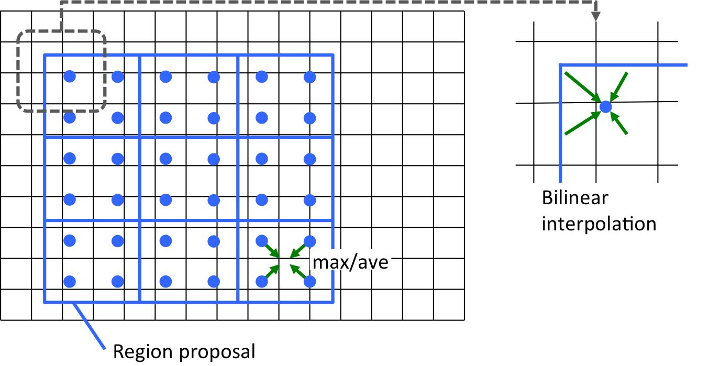
- 具体计算过程：先将RoI映射到特征图（除以16），假设希望输出3×3，则将RoI划分为3×3个Bin，
在每个 Bin 内选择若干个采样点，经典 Mask R-CNN 论文中使用的是每个 Bin 采样 4 个点，也就是 2×2 采样,利用采样点周围最近的四个网格点，根据采样点与这四个点之间的距离，对特征值进行加权计算。
1.计算相对位置 、
2.计算四个网格点的权重
左上角：
右上角：
左下角：
右下角：
3.计算插值结果:4个采样点的权重×采样点的值之和
- 对采样点进行聚合，支持Average取平均值或Max取最大值。
- 假设一个 RoI 被划分为 2×2 个 Bin,
每个 Bin 经过采样、双线性插值和聚合后，得到一个特征值,最终输出：
4.2.1.3 RoI Head
- 经过 RoI Align 后，每个候选区域的特征会进入不同的预测分支
- cls分支：判断目标类别，经过一个全连接层得到每个类别的得分
- reg分支：修正目标框位置，经过一个全连接层得到
坐标偏移量四个回归参数
4.2.1.4 Mask Head
- Mask 分支：预测目标的像素区域，经过多层3×3卷积进一步提取特征，然后进行上采样扩大尺寸，最后生成每个类别对应的掩码概率图。Mask 预测：需要判断每个位置是否属于目标，因此需要保留更多空间细节，使用更高空间分辨率的 RoI 特征。
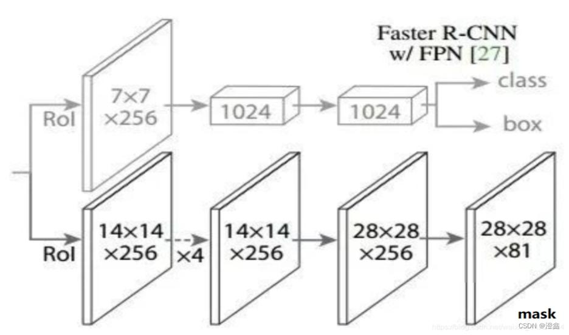
- 经典 Mask R-CNN 的 Mask Head 主要由三部分组成：
- 四个 3×3 卷积层
- 一个 2×2 转置卷积层（Deconvolution）
- 一个 1×1 卷积层
- 假设从RoI Align得到的特征图是14×14×256，经过4个3×3×256conv，Stride=1、Padding=1，尺寸不变，提取更加丰富的局部特征，扩大感受野，在保留空间分辨率的同时，逐步增强特征表达能力。
- 接着进行上采样Kernel = 2 × 2，Stride = 2，转置卷积，尺寸变为28 × 28 × 256，前面的卷积操作虽然提取了特征，但 14×14 的空间分辨率对于精细的像素级预测来说还不够。
- 1×1卷积，将原通道数256映射为类别数，每个通道对应一个类别的Mask预测。
- 为什么不直接输出原图大小的 Mask？
因为每个目标的 Bounding Box 大小不同。如果直接针对原图输出完整分辨率掩码，计算和存储成本都会很高。Mask R-CNN 先在固定大小的 RoI 内预测 Mask，最后再将其映射回原图。
4.2.2 损失函数
- 损失函数：Faster RCNN损失加上Mask分支的损失。
4.2.2.1 Mask Loss
-
训练时，对于一个与汽车匹配的正样本 RoI：
- 找到它匹配的 Ground Truth Box。
- 根据这个 RoI 从对应的 Ground Truth Mask 中裁剪出目标区域。
- 将裁剪结果映射、缩放到固定的28×28 尺寸。
- 得到 Mask Head 的监督标签。
-
Mask Head 最后一层 1×1 卷积输出的是原始数值，也叫 Logits，这个数值并不能直接表示概率，因此需要通过 Sigmoid 函数转换：
这样每个位置都会得到一个 0～1 之间的概率，表示该位置属于对应类别目标的可能性。
- 每个像素只有两种状态：
- 1：属于目标。
- 0：不属于目标。
采用二元交叉熵损失（Binary Cross Entropy，BCE）。
公式：
-
(m=28)：Mask 的宽度和高度。
-
(y_{ij})：真实标签，取值为 0 或 1。
-
(p_{ij})：模型预测该位置属于目标的概率。
-
为什么只计算对应类别的 Mask Loss？因为当前 RoI 已经被分配了一个真实类别，它只需要学习如何预测这个类别的目标轮廓，而不是同时与其他类别竞争。